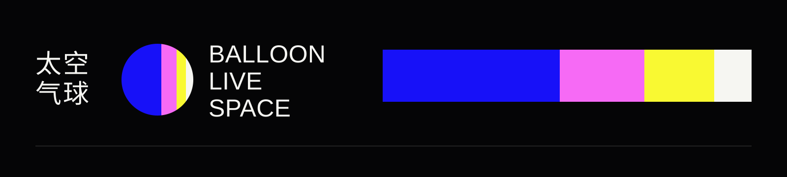
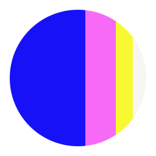

2024 SOURCE-BASED VISUAL RECONSTRUCTION / CANDIDATE, NOT APPROVED


太空气球
BALLOON LIVE SPACE
BALLOON LIVE SPACE
视听展演与节目空间
LIVE MUSIC / VISUAL PERFORMANCE
Identity reconstruction · original vector master not yet found


LIVE MUSIC / VISUAL PERFORMANCE
Identity reconstruction · original vector master not yet found